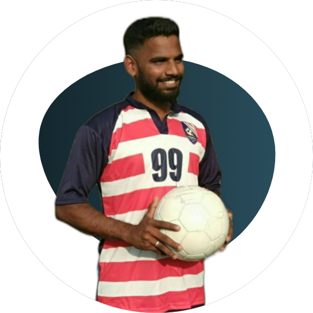

Rocky Arokiaswamy
Head Coach
Holding an AIFF D license, Rocky has been coaching for over more than three years. A keen footballer and has participated in the various competitions state as well as national level. Rocky Aims to bring change in Indian football and developing players who can create the magic on-field that will represent the country and take Indian national level football to the world.